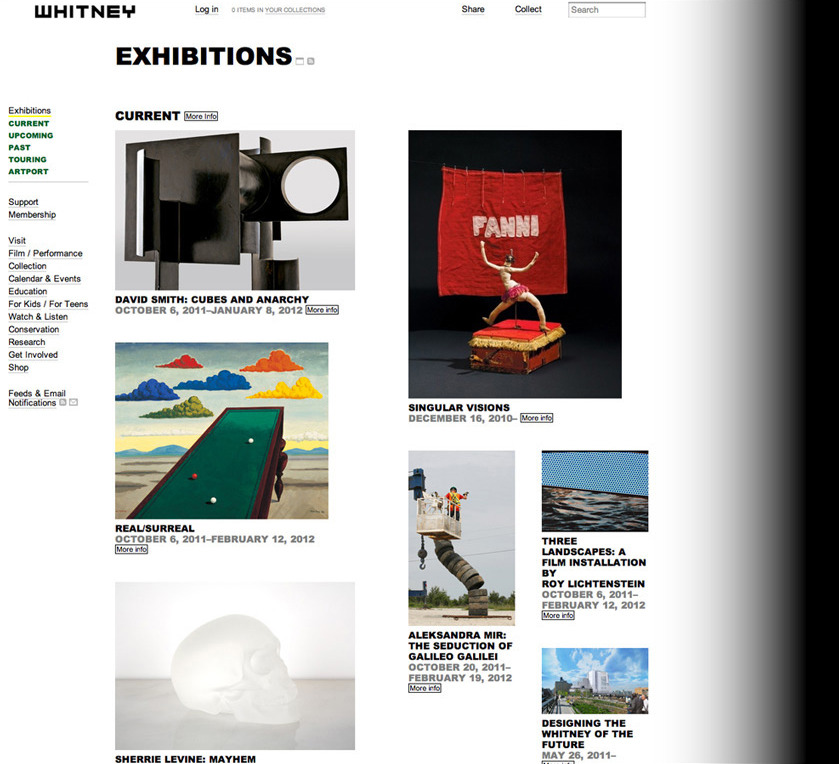

Linked By Air

Whitney.org
Medium: Website
Client: Whitney Museum of American Art
Year: 2009
In 2010, we launched the Whitney Museum’s website, following a year of visual design and the development of new technologies and business processes at the Whitney. To communicate the museum’s geography, the website is black at night and white in the day, and it has its own sunrise and sunset on New York time, marked each morning and night by a changing artist intervention. The website’s modular design allows the Whitney’s many different activities to be woven together in many different ways. Art is shown at generous dimensions, and users can make their own collections (which they can share with other people), stream really great video and audio, customize calendars, manage their memberships, and much more.
A groundbreaking and inclusive new area for kids allows all kids to do that, too, and to contribute their own art. A popular feature is that kids can make their own background patterns for the website, affecting the site for all other kids. In May 2012, Artinfo.com declared the Whitney.org and the Whitney For Kids site the #2 and #3 Top Museum Websites on the internet, respectively.
Recently, we added an online magazine to the site called Whitney Stories. It’s an interactive magazine designed to provide a space for readers to engage with the multiple histories and narratives that make the Whitney a compelling place to visit—in the galleries or online.
Programming: with GrayBits.